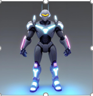
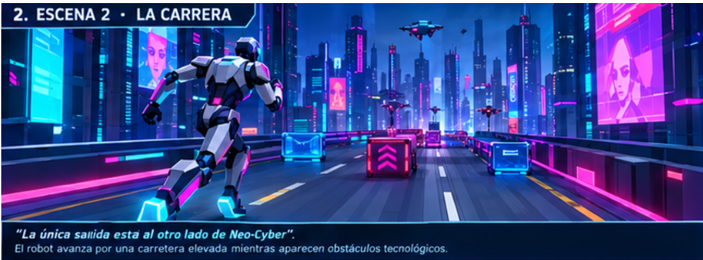
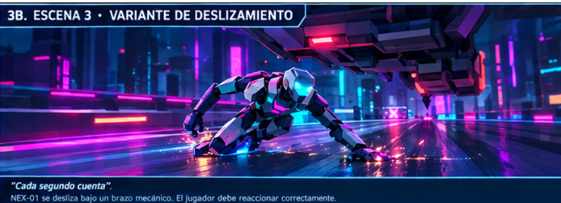
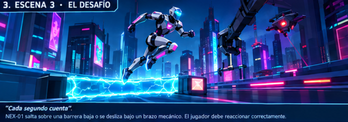
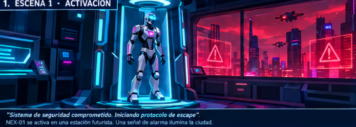
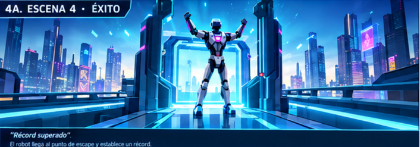
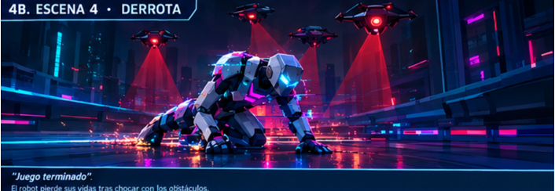
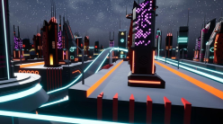

Semáforo
Un juego web creado con Unity. Entra y descubre el desafío de esta primera entrega.
Jugar SemáforoJuegos para jugar en la web
Elige un juego para conocer su propuesta y comenzar a jugar. ¡Que te diviertas!
Un juego web creado con Unity. Entra y descubre el desafío de esta primera entrega.
Jugar SemáforoCorre para escapar de Neo-Cyber. El sistema de seguridad se ha descontrolado y persigue a NEX-01, un robot que debe alcanzar la estación de escape.
Corre por una megaciudad futurista: salta barreras, deslízate bajo obstáculos y sobrevive hasta llegar a la estación.








Diseño de juego: Jorge Robledo Rojas, Paul Chipana y Marco Guzman.
Jugar Cyber Runner